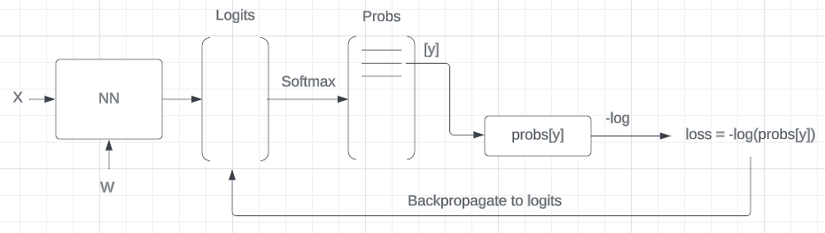

import randomimport stringimport numpy as npimport torchimport torch.nn.functional as Ffrom torch import Tensorimport matplotlib.pyplot as pltimport seaborn as snsimport plotly.express as pximport plotly.graph_objects as goimport pandas as pdfrom dataclasses import dataclass, fieldtorch.set_printoptions(linewidth=120)seed =2**31-1
In this notebook, we will write the backpropagation manually. It is valuable exercise for gaining a deeper understanding of the algorithm. Although in practice, we typically do not implement backpropagation manually, it is crucial to comprehend the process that occurs beneath the surface.
One challenge with backpropagation is that it represents a leaky abstraction. Understanding of the algorithm can avoid numerous errors and improve the ability to debug issues that may arise.
Setup
Load the data
# Load the datawithopen("./data/names.txt", "r") as f: names = f.read().splitlines()print(f"Total # names: {len(names):.>25,}")print(f"Total # characters in all names: {len(''.join(names)):,}")print(names[:5])
Total # names: ...................32,033
Total # characters in all names: 196,113
['emma', 'olivia', 'ava', 'isabella', 'sophia']
Encoding and decoding characters
We define an encoder ch2ix and decoder ix2ch function that maps a character with a numerical representation (i.e. a unique integer) and vice-versa.
chars ="."+ string.ascii_lowercasech2ix = {s: i for i, s inenumerate(chars)}ix2ch = {i: s for s, i in ch2ix.items()}print("Encoder ch2ix:\n", ch2ix)print("Decoder ix2ch:\n", ix2ch)print("E.g. emma:", [ch2ix[c] for c in".emma."])vocab_size =len(chars)print(f"Vocab size: {vocab_size:,}")
@dataclassclass Dataset:""" Attributes: names: list of names. block_size: context length: how many characters do we take to predict the next one? """ names: list[str] block_size: int=3 verbose: bool=False X: Tensor = field(init=False) Y: Tensor = field(init=False)def __post_init__(self) ->None:self._make_dataset()def _make_dataset(self) ->None: X, Y = [], []for w inself.names:ifself.verbose:print(w) context = [0] *self.block_sizefor ch in w +".": ix = ch2ix[ch] X.append(context) Y.append(ix)ifself.verbose:print("".join(ix2ch[i] for i in context), "--->", ix2ch[ix]) context = context[1:] + [ix] # crop and appendself.X = torch.tensor(X)self.Y = torch.tensor(Y)print(f"X.shape: {self.X.shape}, Y.shape: {self.Y.shape}")
We initialise a MLP model with 64 hidden units and an character embedding dimension of 10.
Note
Because we have a batch norm layer, we do not need to add a bias term to the linear layers. We define them anyway because it’s still interesting to calculate the gradients.
Normally we should initialise the weights and biases as follows:
- gain = 5/3 for tanh
- \(W_1: \large\frac{5/3}{\sqrt{\text{fan}_{\text{in}}}}\)
- \(b_1: 0\)
- \(W_2: \large\frac{5/3}{\sqrt{\text{fan}_{\text{in}}}}\)
- \(b_2: 0\)
However, we will initialise the weights and biases in non-standard ways because sometimes initializating with e.g. all zeros could mask an incorrect implementation of the backward pass.
n_emb =10# the dimensionality of the character embedding vectorsn_hidden =64# the number of neurons in the hidden layer of the MLPg = torch.Generator().manual_seed(seed) # for reproducibilityC = torch.randn((vocab_size, n_emb), generator=g)# Layer 1W1 = ( torch.randn((n_emb * block_size, n_hidden), generator=g)* (5/3)/ ((n_emb * block_size) **0.5))b1 = torch.randn(n_hidden, generator=g) *0.1# Layer 2W2 = torch.randn((n_hidden, vocab_size), generator=g) *0.1b2 = torch.randn(vocab_size, generator=g) *0.1# BatchNorm parametersbn_gain = torch.randn((1, n_hidden)) *0.1+1.0bn_bias = torch.randn((1, n_hidden)) *0.1parameters = [C, W1, b1, W2, b2, bn_gain, bn_bias]n_params =sum(p.nelement() for p in parameters)print(f"Total # parameters: {n_params:,}")for p in parameters: p.requires_grad =True
# Embed the characters into vectors and concatenate thememb = C[Xb] # 32 x 3 x 10emb_cat = emb.view(emb.shape[0], -1) # 32 x 30# Linear layer 1# pre-batch normh_pre_bn = emb_cat @ W1 + b1 # 32 x 64# batch norm layerbn_mean_i = ( h_pre_bn.sum(0, keepdim=True) / bs) # 1 x 64 (keepdim=True to keep the 1 x 64 shape otherwise 64)bn_diff = h_pre_bn - bn_mean_i # 32 x 64bn_diff2 = bn_diff**2# 32 x 64bn_var = bn_diff2.sum(0, keepdim=True) / ( bs -1) # 1 x 64 Bessel's correction (dividing by n-1, not n)bn_var_inv = (bn_var +1e-5) **-0.5# 1 x 64bn_raw = bn_diff * bn_var_inv # 32 x 64 batchnorm raw outputh_pre_act = bn_gain * bn_raw + bn_bias # 32 x 64 hiodden layer pre-activation# non-linearityh = torch.tanh(h_pre_act) # 32 x 64# Linear layer 2# output layerlogits = h @ W2 + b2 # 32 x 28# cross entropy loss (same as F.cross_entropy(logits, Yb))logit_maxes = logits.max(1, keepdim=True).values # 32 x 1norm_logits = logits - logit_maxes # 32 x 27 subtract max for numerical stabilitycounts = norm_logits.exp() # 32 x 27counts_sum = counts.sum(1, keepdims=True) # 32 x 1counts_sum_inv = counts_sum**-1# 32 x 1probs = counts * counts_sum_inv # 32 x 27logprobs = probs.log() # 32 x 27loss =-logprobs[range(bs), Yb].mean()
Backward pass
Pytorch backward pass
We will first calculate the backward pass with Pytorch’s autograd. This will allow us to compare the results of our manual implementation with the Pytorch implementation.
# PyTorch backward passfor p in parameters: p.grad =Nonefor t in [ logprobs, probs, counts, counts_sum, counts_sum_inv, norm_logits, logit_maxes, logits, h, h_pre_act, bn_raw, bn_var_inv, bn_var, bn_diff2, bn_diff, h_pre_bn, bn_mean_i, emb_cat, emb,]: t.retain_grad()loss.backward()loss
tensor(3.4002, grad_fn=<NegBackward0>)
Manual backward pass
Cross entropy loss
We now calculate the backward pass of each step manually. We will compare the results with the Pytorch implementation.
Note
The shape of the gradient should be the same as the shape of its parameter
logprobs
loss =-logprobs[range(bs), Yb].mean()
logprobs[range(bs), Yb]
plucks the logprob corresponding to the value of the element of Yb for each sample in the batch.
The derivative of loss with respect to the logprobs is 0 everywhere except for the logprob corresponding to the value of the elements of Yb where it is \(-\large\frac{1}{bs}\).
All the elements of probs are loged element-wise. The derivative of a log is \({\large\frac{d}{dx}} log(x) = \large\frac{1}{x}\).
The derivative of logprobs with respect to probs is thus (chain rule) \({\large\frac{1}{probs}} * \textrm{d\_logprobs}\).
Intuitively, if an element of probs is close to 1, the network correctly predicts the next character. The d_logprobs is just passed through.
However, when an element of probs is small, 1/probs is big and amplifies d_logprobs.
probs and d_logprobs are both 32x27 tensors and therfore can be multiplied without broadcasting.
The derivative is the sum of the derivatives of the 3 branches: \[
\begin{align*}
\begin{bmatrix}
a_{11} + a_{21} + a_{31}\\
a_{21} + a_{22} + a_{32}\\
a_{31} + a_{23} + a_{33}
\end{bmatrix}
\end{align*}
\]
counts is a 32x27 tensor and counts_sum_inv is a 32x1 tensor. counts_sum_inv gets broadcasted (replicated 27x) to a 32x27 tensor and then multiplied by counts. In the backward pass we have to sum the derivatives of the 27 branches.
Note
In the forward pass, if we sum the tensor or compute its mean, max, etc., we need to replicate it (for broadcasting) in the backward pass. Similarly, if we replicate the tensor in the forward pass, we need to sum it in the backward pass.
counts_sum_inv depends on counts. counts_sum_inv backpropagates through counts_sum and counts_sum backpropagates through counts. counts is a node that is used twice. The two branches are:
We have a 3x3 tensor a and sum the rows to get a 3x1 tensor b. We have the derivative of the loss with respect to b. We want to calculate the derivative of the loss with respect to the elements of a.
b1 only depends on a11, a12 and a13. The derivative of b1 with respect to a11, a12, and a13 is 1. The derivative of b1 with respect to all the other elements of a is 0.
In the chain rule, we multiply the derivative of the loss with respect to b1 with the derivative of b1 with respect to a11, a12 and a13.
An addition can be seen as a router of gradients. The gradient comming from above gets routed equally to all the elements that participate in the addition. In this case the derivative of the loss with respect to b1 is routed equally to a11, a12 and a13.
In the backpropagation we need to take the 32x1 tensor d_counts_sum and replicate it to form a 32x27 tensor. We also need to add this d_counts gradients to the d_counts gradients that from the other branch.
The broadcasting of b to a is done by replicating b to a 3x3 tensor. This effectively creates 3 branches. To calculate the derivative of c with respect to b, we need to sum the derivatives of the 3 branches.
norm_logits is a 32x27 tensor, logits is a 32x27 tensor and logit_maxes is a 32x1 tensor. logit_maxes gets broadcasted so we sum the gradients. logits doesn’t gets broadcasted so we don’t sum the gradients.
d_logits = d_norm_logits.clone() # 32 x 27d_logits_maxes = (-d_norm_logits).sum(1, keepdims=True) # 32 x 1compare_gradients("logits_maxes", d_logits_maxes, logit_maxes)
We substracted the maximum of the logits from the logits for numerical stability, otherwise the exponentiation of the logits could overflow when a logit is large. This shifting operation has no effect on probs.
Because subtracting the maximum of the logits from the logits has no effect on probs it will also not change loss. The gradients of logits_maxes should all be zero.
logits.max(1) returns a tuple of 2 tensors. The first tensor is the maximum values of each row of logits and the second tensor is the indices of the maximum values.
We have a 32 x 27 tensor. The max of the tensor plucks out the maximum value of each row and returns a 32 x 1 tensor. The derivative should be 1 * d_logit_maxes for the maximum value and 0 for all the other values in the row.
We can calculate the derivative like we did for logprobs where we created a 32 x 27 zero-tensor and then populate it with 1 at the indices of the maximum values. Another way is to create a one-hot tensor with a 1 at the indices of the maximum values.
Because we are on the second branch, we also need to add the d_logits from the first branch.
h is a 32 x 64 tensor, W2 is a 64 x 27 tensor and b2 is 27d vector. The bias b2 is broadcasted to a 32 x 27 tensor (h @ W2). Internally, the broadcasting is done by casting the 27d vector to a 1 x 27 tensor and then replicating it vertically to a 32 x 27 tensor.
Note
It’s not realy necessary to remember the formula’s for the derivatives of the linear transformation. The dimensions of the tensors will tell how to calculate the derivatives.
Example: To calculate d_h. The shape of d_h is equal to the shape of h. It’s 32 x 64. We also know that d_h should be some matrix multiplication of d_logits and W2. The shape of d_logits is 32 x 27 and the shape of W2 is 64 x 27. So we can conclude that d_h = d_logits @ W2.T.
The shape of d_W2 is equal to the shape of W2. It’s 64 x 27. We also know that d_W2 should be some matrix multiplication of h.T and d_logits. The shape of h.T is 64 x 32 and the shape of d_logits is 32 x 27. So we can conclude that d_W2 = h.T @ d_logits.
The shape of d_b2 is equal to the shape of b2. It’s 27. We also know that d_b2 should be the sum of d_logits along axis 0. The shape of d_logits is 32 x 27. So we can conclude that d_b2 = d_logits.sum(axis=0).
d_h = d_logits @ W2.T # 32 x 64d_W2 = h.T @ d_logits # 64 x 27d_b2 = d_logits.sum(0, keepdims=True) # 1 x 27compare_gradients("h", d_h, h)compare_gradients("W2", d_W2, W2)compare_gradients("b2", d_b2, b2)
bn_diff2 is a 32 x 64 tensor, bn_var is a 1 x 64 tensor. The tensor bn_diff2 is summed in the forward pass, therefore we have to replicate the gradients in the backward pass.
emb is a 32 x 3 x 10 tensor, C is a 27 x 10 tensor and Xb is a 32 x 3 tensor.
Each element of Xb a character index. Each character index is used to select a row (10d vector) from C.
We can calculate the backward pass in different ways.
- Naive: we first create a zero tensor d_C with the same shape as C (27 x 10). Then we loop over the 32 samples from Xb. For each sample, we loop over the 3 character indices. For each character index, we add the corresponding 10d vector from d_emb to the corresponding row in d_C.
Vectorised 1: we first transform each element of Xb into a 27d one-hot vector. Xb_1_hot is then a 32 x 3 x 27 tensor with 32 samples, each having 3 one-hot vectors. We then reshape Xb_1_hot into a (32x3) x 27 tensor and d_emb into a (32x3) x 10 tensor. Then d_C = Xb_1_hot @ d_emb, which is a 27 x 10 tensor.
Vectorised 2: We can take the dot product of ‘Xb_1_hot’ and ‘d_emb’ using torch.tensordot.
115 µs ± 627 ns per loop (mean ± std. dev. of 7 runs, 10,000 loops each)
%%timeitF.cross_entropy(logits, Yb)
17.1 µs ± 687 ns per loop (mean ± std. dev. of 7 runs, 100,000 loops each)
Backward pass
We will derive the mathematical expressions for calculatind d_logits in one step.
loss_fast = F.cross_entropy(logits, Yb)

cross_entropy_diag
For a single sample, the cross entropy loss is calculated as follows:
\[
\begin{align*}
loss &= -log (p_y)\\
p_i &= \frac{e^{l_i}}{\sum_j e^{l_j}}\\
\Rightarrow loss &= -log\frac{e^{l_y}}{\sum_j e^{l_j}}
\end{align*}
\] where \(p\) is a vector of all probablilties, \(p_y\) are the probabilities of the label (character) \(y\), \(p_i\) are the probabilities of the \(i\)-th sample and \(l_i\) the logit of the \(i\)-th sample.
The derivative of the cross entropy loss with respect to the \(i\)-th logit is:
The gradient is either the softmax (\(p_i\)) or the softmax minus 1 (\(p_i-1\)) depending on whether the logit .
This is the gradient of a single sample \(i\). The loss of a batch is the average of the losses of all samples in the batch. We have to backpropagate through the average as well. The gradient of the average is \(\large\frac{1}{bs}\).
d_logits = F.softmax(logits, dim=1) # 32 x 27# substract 1 from the correct classd_logits[range(bs), Yb] -=1.0# backprop through averagingd_logits /= bscompare_gradients("logits", d_logits, logits)
The black d_logits squares are the position of the correct indices where we substracted 1 from the gradient. The other squares are the positions where d_logits * bs is equal to the probability.
Let’s look at 1 sample:
s =0print(f"y: {Yb[s]}")print(f"probs: {F.softmax(logits, dim=1)[s]}")print(f"d_logits: {d_logits[0]*bs}")print(f"diff: {F.softmax(logits, dim=1)[s] - d_logits[s]*bs}")
probs sums to 1, d_logits sums to 0. This is logic because d_logits is equal to probs except in exactly one place where we substracted 1 .
print(f"sum of probs: {F.softmax(logits, dim=1)[s].sum()}")print(f"sum of d_logits: {d_logits[s].sum()}")
sum of probs: 1.0
sum of d_logits: -9.313225746154785e-10
Note
The intuition is to think about the d_logits gradients of each sample as a force that pushes the logits up for position corresponding to the correct label and pushes the logits down for all other positions. The total amount of force is 0 because the sum of the gradients is 0.
The amount of force that we are applying to each position is proportional to the probability of that position. If the probabilities are exactly correct then the force that we apply to each position is 0. The probs is 0 everywhere except for the correct position where it is 1. d_logits is 0 everywhere. If we have a confidently mispredicted element then the probs is ~0 everywhere except for the mispredicted position where it is ~1. d_logits is ~0 everywhere except for the mispredicted position where it is ~-1 and ~1 for the correct position. The force applied to the mispredicted position pulls that logit down and the equal force is applied to the correct position and pushes that logit up.
In this section we will calculate the batchnorm in one step by using the formula \(y_i=\gamma{\large\frac{x_i-\mu}{\sqrt{\sigma^2+\epsilon}}} + \beta\) and manually backpropagate through it.
The \(i\) components of \(\hat x\) are dependent on \(\mu\) in the forward pass. Therefore we have to sum over all \(i\)’s in the backward pass. Additionally we \(\sigma\) is dependent on \(\mu\) and therefore we also have to add the gradient of \(\sigma\) with respect to \(\mu\).
with torch.no_grad():# pass the training set through emb = C[Xtr] embcat = emb.view(emb.shape[0], -1) hpreact = embcat @ W1 + b1# measure the mean/std over the entire training set bnmean = hpreact.mean(0, keepdim=True) bnvar = hpreact.var(0, keepdim=True, unbiased=True)